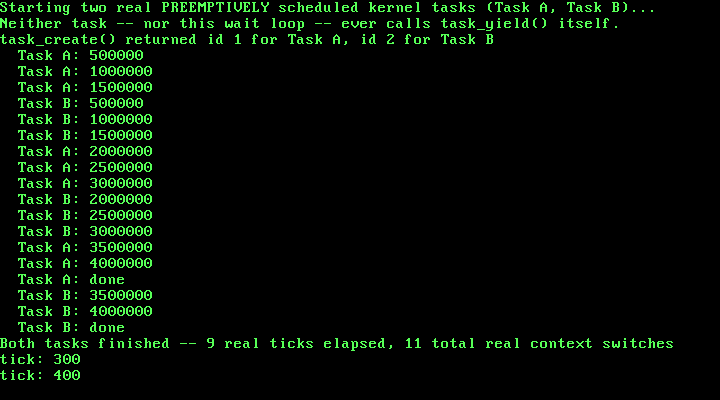

12. Preemptive Multitasking: Letting the Timer Decide¶
What you will understand: why Chapter 11's cooperative scheduler only ever switched tasks when a task chose to call task_yield(), what has to change to let the real PIT timer force that decision instead, why a real timer-driven switch surfaces a CPU-state subtlety Chapter 11's own design never had to face -- the interrupt flag, IF -- and how to independently verify a preemptive scheduler's own real switch count from nothing but real tick counts, even though the exact tick count itself is not perfectly reproducible run to run.
What you need to know first: Chapter 11's whole task-switching design (switch_task, task_create, task_yield, task_exit, the TCB) -- this chapter changes remarkably little of it -- and Chapter 6's PIT-driven irq0_handler, which is where this chapter's one real new call site lives. Still Part 6.
What "cooperative" was quietly assuming¶
Chapter 11's task_yield() only ever ran because some task's own code called it, voluntarily, after finishing a unit of real work. That is a real scheduler, but a trusting one: a task that forgot to call task_yield() -- or that simply had a very long loop with no yield inside it -- would hold the CPU indefinitely, and nothing in that design could stop it. This chapter removes that assumption entirely. Task A and Task B, below, never call task_yield() anywhere in their own code. Neither does kmain's own wait loop. The only thing that ever calls it now is the real IRQ0 timer interrupt this kernel has had running since Chapter 6.
Driving the scheduler from 012_pit.c's own irq0_handler¶
The real change is almost entirely one new call, in one function this book already had:
/* Chapter 6: this book's first source of real, hardware-driven time.
* Every chapter through Chapter 5 could only react to events -- a CPU
* exception, a keypress -- with no notion of "how much time has passed"
* in between. The 8253/8254 Programmable Interval Timer (PIT) fixes
* that: programmed correctly, it fires IRQ0 at a steady, chosen rate,
* and this chapter turns those ticks into a real, growing counter this
* kernel can trust. */
#include <stdint.h>
#include "012_pic.h"
#include "012_pit.h"
#include "012_printf.h"
#include "012_task.h"
static inline void outb(uint16_t port, uint8_t val) {
__asm__ volatile ("outb %0, %1" : : "a"(val), "Nd"(port));
}
/* "Channel 0 is connected directly to IRQ0" and is read/written through
* IO port 0x40; "the Mode/Command register ... is located at IO port
* 0x43" (OSDev Wiki, "Programmable Interval Timer":
* https://wiki.osdev.org/Programmable_Interval_Timer). */
#define PIT_CH0_DATA_PORT 0x40
#define PIT_COMMAND_PORT 0x43
/* The command byte this chapter sends is built from the cited bit
* layout: bits 7-6 = 00 (select channel 0), bits 5-4 = 11 (access
* mode: lobyte, then hibyte), bits 3-1 = 011 (Mode 3, square wave
* generator), bit 0 = 0 (16-bit binary, not BCD). 0b00110110 = 0x36. */
#define PIT_CH0_MODE3_BINARY 0x36
/* "The oscillator used by the PIT chip runs at (roughly) 1.193182 MHz"
* -- the same cited page's own reload-value formula is
* reload_value = 1193182 / desired_frequency_Hz. */
#define PIT_BASE_FREQUENCY_HZ 1193182u
static volatile uint32_t tick_count = 0;
/* At 100 Hz (this chapter's chosen rate) this prints once per real
* second -- a deliberately coarse rate, so the chapter's own QEMU
* verification run can show several real, independent tick prints in
* a few seconds of wall-clock time without flooding the serial log. */
#define TICKS_PER_PRINT 100
void pit_init(uint32_t frequency_hz) {
uint32_t divisor = PIT_BASE_FREQUENCY_HZ / frequency_hz;
outb(PIT_COMMAND_PORT, PIT_CH0_MODE3_BINARY);
/* "Lobyte/hibyte" access mode (the 11 in bits 5-4 above) means the
* PIT expects the 16-bit divisor as two separate byte writes to the
* same data port, low byte first. */
outb(PIT_CH0_DATA_PORT, (uint8_t) (divisor & 0xFF));
outb(PIT_CH0_DATA_PORT, (uint8_t) ((divisor >> 8) & 0xFF));
/* Unmask IRQ0 only now that channel 0 is actually programmed and
* ticking at a known rate -- the same reasoning 005_keyboard.c's
* keyboard_init() already applied to IRQ1: never unmask a line
* before the hardware behind it is in a state this kernel actually
* understands. */
pic_clear_mask(0);
}
uint32_t pit_get_ticks(void) {
return tick_count;
}
/* Called from 012_irq0.asm's own stub on every real IRQ0. Chapter 11
* ended here -- this chapter adds exactly one more call, task_tick(),
* and its position relative to pic_send_eoi(0) is not arbitrary. EOI
* has to be sent *before* task_tick() can possibly switch this CPU
* away to another task, not after: if a switch happens first and this
* exact call never returns for a long while (this task might not run
* again for many more real ticks), the master PIC would never be told
* this IRQ0 was handled, and "the PIC will never deliver that line
* ... again" (011_pic.h's own words for exactly this requirement) --
* meaning every *other* task would also stop receiving ticks, since
* the one thing that could eventually get this task rescheduled to
* finish sending that EOI is itself a tick. Sending it first, always,
* before anything that might switch away, avoids that outright. */
void irq0_handler(void) {
tick_count++;
if (tick_count % TICKS_PER_PRINT == 0) {
kprintf("tick: %u\n", tick_count);
}
pic_send_eoi(0);
task_tick();
}
task_tick()'s position relative to pic_send_eoi(0) is not arbitrary. If a switch happened before EOI, and the task being switched away from did not run again for a while, the PIC would never be told this IRQ0 was handled -- and "the PIC will never deliver that line ... again" until it is. Every other task's own ticks would silently stop arriving too, since the one thing that could eventually get the stalled task rescheduled to send that EOI is itself a tick that can no longer fire. Sending EOI first, unconditionally, before anything that might switch this CPU away, is what avoids that.
The real subtlety a timer-driven switch introduces: IF¶
Chapter 11's switch_task() never touched EFLAGS, and never needed to -- every switch in that chapter happened with interrupts already enabled throughout, since nothing in that chapter's own code ever disabled them. This chapter's switches all happen from inside an interrupt handler, reached through a real interrupt gate -- this book's own idt_set_gate() calls have used type 0x8E, a 32-bit interrupt gate, since Chapter 4 -- and a real interrupt gate clears IF automatically on entry. switch_task() still does not save or restore EFLAGS; IF is one single, real, shared CPU flag, not per-task state. Left alone, that means whichever task gets switched into next simply inherits IF=0, since that is the real, physical state of the CPU at the moment the switch happens -- and a task that starts running with interrupts silently, permanently disabled would never be preempted again, breaking this entire chapter's own point after exactly one switch.
The OSDev Wiki states the real requirement directly:
"Caller is expected to disable IRQs before calling, and enable IRQs again after function returns"
(OSDev Wiki, "Kernel Multitasking": https://wiki.osdev.org/Kernel_Multitasking)
Rather than push that requirement onto every caller, this chapter's task_yield() enforces it itself -- and, since a brand-new task's very first run jumps straight to its own entry point rather than returning into task_yield() at all, a small trampoline gives it the same guarantee on its first run too.
#ifndef UNIX_OS_012_TASK_H
#define UNIX_OS_012_TASK_H
#include <stdint.h>
/* Sets up this kernel's task list with exactly one task -- task 0, the
* kernel's own boot-time execution context (the one kmain() is already
* running on when this is called), still running on the same boot
* stack every chapter since Chapter 1 has used. Must be called before
* any task_create()/task_yield()/task_exit() call. */
void task_init(void);
/* Creates a new cooperative kernel task: allocates it a real stack
* from Chapter 9's kmalloc(), and pre-populates that stack so the
* first time this task is ever switched into, execution begins at
* `entry` (OSDev Wiki, "X86 Cooperative Multitasking Tutorial": "the
* kernel needs to put values on the new task's kernel stack to match
* the values that 'switch_tasks' expects to pop off"). `entry` must
* eventually call task_exit() -- it must never return normally.
* Returns the new task's index (1, 2, ...), or -1 if this kernel's
* fixed task table is already full. */
int task_create(void (*entry)(void));
/* Voluntarily gives up the CPU: saves the calling task's callee-saved
* registers and stack pointer, picks the next RUNNING task in
* round-robin order, and switches to it. Returns normally, right
* where it left off, once this task is switched back in. If no other
* task is currently RUNNING, returns immediately without performing a
* real switch. */
void task_yield(void);
/* Marks the calling task DONE and switches away from it permanently.
* Never returns -- this task's own stack and call frame are simply
* abandoned from this point on. */
void task_exit(void);
/* Non-zero once the task at `index` (as returned by task_create())
* has called task_exit(). */
int task_is_done(int index);
/* Total number of real context switches switch_task() has performed
* since task_init(). Exists purely for this chapter's own real, live
* verification. */
uint32_t task_switch_count(void);
/* Called from 012_pit.c's irq0_handler() on every single real IRQ0
* tick, after that tick's own EOI has already been sent. Before
* task_init() has run, does nothing -- this kernel has no task table
* to preempt yet. After task_init(), calls task_yield() unconditionally,
* exactly once per real tick: this chapter's whole scheduling policy
* is "one tick, one time slice," chosen because it is the simplest
* policy whose real switch count is independently predictable from
* nothing but the real tick count, with no separate countdown state
* of its own to get wrong. */
void task_tick(void);
#endif
#include <stdint.h>
#include "012_kheap.h"
#include "012_printf.h"
#include "012_task.h"
/* This chapter's own Thread Control Block, in the same spirit the
* OSDev Wiki describes for kernel-level tasks: "The TCB holds task
* state including the kernel stack pointer (ESP) ... " (OSDev Wiki,
* "Kernel Multitasking": https://wiki.osdev.org/Kernel_Multitasking).
* This kernel has no user/kernel privilege split and no per-task
* address space yet -- every task here runs in ring 0 sharing the one
* page directory Chapter 8 built -- so this TCB carries nothing for
* CR3 or a TSS.ESP0 field the way a fuller kernel's would; `esp` is
* almost the whole of what switch_task() needs. `entry` is new this
* chapter -- see task_start_trampoline() below for why. */
struct task {
uint32_t esp; /* valid only while this task is NOT current */
void *stack_base; /* the kmalloc()'d block backing this task's
* stack -- kept only so a later chapter with
* real task teardown could kfree() it; this
* chapter never frees a task's stack */
void (*entry)(void); /* this task's real entry point -- kept so
* task_start_trampoline() can find it */
int done;
};
#define TASK_MAX_TASKS 3u
#define TASK_STACK_SIZE 4096u
static struct task tasks[TASK_MAX_TASKS];
static int task_count = 0;
static int current_task = 0;
static uint32_t switch_count = 0;
static int tasking_ready = 0;
extern void switch_task(uint32_t *old_esp_ptr, uint32_t new_esp);
/* Chapter 11's task_create() put `entry` directly on a new task's
* stack as the address switch_task()'s own `ret` would jump to --
* correct for a purely cooperative scheduler, where every switch_task()
* call happens with IF already 1 (interrupts enabled) throughout,
* since nothing in that chapter ever touched IF at all. This chapter
* changes that: every real switch now happens from *inside* an IRQ0
* interrupt handler, entered through a real interrupt gate that the
* CPU itself clears IF for on entry (OSDev Wiki's own IDT gate-type
* description; this book's own idt_set_gate() calls have used type
* 0x8E, a 32-bit interrupt gate, since Chapter 4). switch_task()
* itself never saves or restores EFLAGS -- IF is one single, real,
* shared CPU flag, not per-task state -- so whichever task gets
* switched into next inherits whatever IF happens to be at that exact
* moment: 0, because we are still inside that interrupt handler. A
* task resuming through task_yield()'s own return point can restore
* that itself (see below); but a task running for the very first
* time jumps straight to `entry`, which has no such checkpoint to
* pass through -- so without this trampoline, a brand-new task would
* start running with interrupts silently, permanently disabled, and
* this whole chapter's preemption would only ever work once. */
static void task_start_trampoline(void) {
__asm__ volatile ("sti");
tasks[current_task].entry();
/* Defensive, not load-bearing: every real task body in this
* chapter already calls task_exit() itself. If one ever forgot,
* this is what stands between that mistake and running off the
* end of a kmalloc()'d stack into whatever memory happens to
* follow it. */
task_exit();
}
void task_init(void) {
tasks[0].esp = 0; /* never read while task 0 is current */
tasks[0].stack_base = 0; /* task 0 owns no kmalloc'd stack -- it
* is this kernel's own boot stack,
* already running before task_init()
* is ever called */
tasks[0].entry = 0; /* task 0 never starts via the
* trampoline -- it is already running */
tasks[0].done = 0;
task_count = 1;
current_task = 0;
switch_count = 0;
tasking_ready = 1;
}
int task_create(void (*entry)(void)) {
if (task_count >= (int) TASK_MAX_TASKS) {
kprintf("task_create: task table full (%u tasks) -- refusing\n", TASK_MAX_TASKS);
return -1;
}
struct task *t = &tasks[task_count];
void *stack = kmalloc(TASK_STACK_SIZE);
uint32_t top = (uint32_t) (uintptr_t) stack + TASK_STACK_SIZE;
uint32_t *sp = (uint32_t *) top;
/* Build the exact stack frame switch_task()'s own epilogue expects
* to pop the first time this task is switched into: EDI, ESI, EBX,
* EBP (in that order, since switch_task() pushed EBP first and
* pops in reverse), then a return address on top -- which is what
* makes switch_task()'s final `ret` land directly on
* task_start_trampoline (OSDev Wiki, "X86 Cooperative Multitasking
* Tutorial": a new task's registers are initialized with
* "task->regs.esp = (uint32_t) allocPage() + 0x1000" and
* "task->regs.eip = (uint32_t) main"). Zero is a fine placeholder
* for EBP/EBX/ESI/EDI here -- nothing has run inside this task yet
* to give those registers a real saved value. */
*(--sp) = (uint32_t) (uintptr_t) task_start_trampoline; /* return address for `ret` */
*(--sp) = 0; /* ebp */
*(--sp) = 0; /* ebx */
*(--sp) = 0; /* esi */
*(--sp) = 0; /* edi */
t->esp = (uint32_t) (uintptr_t) sp;
t->stack_base = stack;
t->entry = entry;
t->done = 0;
int index = task_count;
task_count++;
return index;
}
void task_yield(void) {
/* OSDev Wiki, "Kernel Multitasking": "Caller is expected to
* disable IRQs before calling, and enable IRQs again after
* function returns" -- rather than push that requirement onto
* every caller, task_yield() enforces it itself, so it stays
* correct regardless of whether it was reached from an ordinary
* cdecl call or, as every real call in this chapter's own run
* is, from inside an interrupt handler where IF is already 0. */
__asm__ volatile ("cli");
int old = current_task;
int next = old;
for (int i = 1; i <= task_count; i++) {
int candidate = (old + i) % task_count;
if (!tasks[candidate].done) {
next = candidate;
break;
}
}
if (tasks[next].done) {
/* Every task, including this one, has called task_exit() --
* this scheduler has no idle task to fall back on yet, so
* there is genuinely nothing left to run. */
kprintf("task_yield: no runnable task remains -- halting\n");
for (;;) {
__asm__ volatile ("hlt");
}
}
if (next == old) {
__asm__ volatile ("sti");
return; /* only this task is runnable -- nothing to switch to */
}
current_task = next;
switch_count++;
switch_task(&tasks[old].esp, tasks[next].esp);
/* Execution only reaches here once this exact task is switched
* back into again -- possibly much later, and possibly by
* unwinding all the way back up through some real IRQ0 stub's own
* `iret`, which is a second, independent place IF=1 also gets
* restored from. The explicit `sti` here is still required: it is
* what re-enables interrupts for every task that resumes through
* this exact return point rather than through an `iret` at all. */
__asm__ volatile ("sti");
}
void task_exit(void) {
tasks[current_task].done = 1;
task_yield();
/* unreachable: task_yield() above either switches this task's own
* stack away permanently (this call frame is simply abandoned,
* never resumed again) or halts the kernel outright if nothing
* else is runnable. */
}
int task_is_done(int index) {
return tasks[index].done;
}
uint32_t task_switch_count(void) {
return switch_count;
}
void task_tick(void) {
if (!tasking_ready) {
return; /* task_init() has not run yet -- nothing to preempt */
}
task_yield();
}
task_start_trampoline() is the one genuinely new piece of machinery this chapter adds to the task-switching core itself. Chapter 11's task_create() put a task's real entry function directly where switch_task()'s own ret would land -- correct there, because IF was never in question. This chapter's task_create() points that same slot at the trampoline instead, which does exactly one thing before running the task's real code: sti. Every other path back into a running task -- task_yield()'s own return, right after switch_task() -- gets the identical treatment. Between those two checkpoints, every task this kernel ever runs is guaranteed to have interrupts enabled before its own code resumes, regardless of whether it is running for the very first time or the fiftieth.
012_kmain.c: two tasks that never ask for the CPU back¶
Everything through Chapter 11 runs first, unchanged, for the same reason it always has. What changed is the demonstration itself -- these two tasks contain no cooperation at all:
/* Chapter 12: the tasks this kernel runs no longer have to cooperate
* to share the CPU. Chapter 11's tasks each called task_yield() by
* hand, after every single unit of real work -- a real scheduler, but
* one that trusted every task to behave. This chapter removes that
* trust: Task A and Task B below never call task_yield() themselves,
* anywhere, and neither does kmain's own wait loop. The only thing
* that ever calls it now is the real IRQ0 timer interrupt, already
* running since Chapter 6 -- 012_pit.c's own irq0_handler() drives
* one full scheduling decision on every single real tick. Whichever
* task happens to be running when that tick lands gets suspended,
* mid-instruction as far as its own code is concerned, with no idea
* it is about to happen. */
#include <stdint.h>
#include "012_gdt.h"
#include "012_idt.h"
#include "012_keyboard.h"
#include "012_kheap.h"
#include "012_multiboot.h"
#include "012_paging.h"
#include "012_pic.h"
#include "012_pit.h"
#include "012_pmm.h"
#include "012_printf.h"
#include "012_serial.h"
#include "012_task.h"
#include "012_vga.h"
#define TIMER_FREQUENCY_HZ 100
/* Deliberately far outside the 0-64 MiB identity-mapped range (which
* only ever occupies page-directory entries 0-15): 0xC0000000 >> 22 =
* 768. Mapping here forces paging_map_page() to allocate a genuinely
* new page table rather than reusing one paging_init() already built. */
#define TEST_VIRT_ADDR 0xC0000000u
/* Defined by 012_linker.ld, not by this file -- the linker is the one
* part of this toolchain that genuinely knows where the kernel image's
* last real section ends in physical memory. */
extern char kernel_end[];
/* How much real, uninterruptible-looking work each task does before
* it naturally finishes -- large enough that many real IRQ0 ticks (at
* 100 Hz, one every ~10 ms) land somewhere in the middle of it, since
* a single pass through this loop takes QEMU's emulated CPU far less
* than 10 ms. Chosen empirically from this chapter's own real run,
* the same way every prior chapter's own real constants were. */
#define TASK_WORK_TARGET 4000000u
#define TASK_PRINT_EVERY 500000u
/* This chapter's two demo tasks. Neither one calls task_yield()
* anywhere in this loop -- the whole point. Whatever interleaving
* this chapter's real run shows is forced entirely by the real timer,
* not requested by either task. */
static void task_a_entry(void) {
for (uint32_t i = 1; i <= TASK_WORK_TARGET; i++) {
if (i % TASK_PRINT_EVERY == 0) {
kprintf(" Task A: %u\n", i);
}
}
kprintf(" Task A: done\n");
task_exit();
}
static void task_b_entry(void) {
for (uint32_t i = 1; i <= TASK_WORK_TARGET; i++) {
if (i % TASK_PRINT_EVERY == 0) {
kprintf(" Task B: %u\n", i);
}
}
kprintf(" Task B: done\n");
task_exit();
}
void kmain(uint32_t magic, uint32_t mboot_info_addr) {
serial_init();
vga_init();
vga_set_color(VGA_COLOR_LIGHT_GREEN, VGA_COLOR_BLACK);
kprintf("Unix OS from Scratch -- Chapter 12: kernel entry reached\n");
if (magic != MULTIBOOT2_BOOTLOADER_MAGIC) {
kprintf("FATAL: EAX held 0x%x at entry, not the real Multiboot2 magic 0x%x -- halting\n",
magic, MULTIBOOT2_BOOTLOADER_MAGIC);
__asm__ volatile ("cli");
for (;;) { __asm__ volatile ("hlt"); }
}
kprintf("Multiboot2 magic confirmed in EAX: 0x%x\n", magic);
const struct multiboot_tag_mmap *mmap = multiboot_find_mmap(mboot_info_addr);
if (mmap == 0) {
kprintf("FATAL: no memory map tag in this boot information structure -- halting\n");
__asm__ volatile ("cli");
for (;;) { __asm__ volatile ("hlt"); }
}
multiboot_print_mmap(mmap);
uint32_t kernel_end_addr = (uint32_t) (uintptr_t) kernel_end;
kprintf("Kernel image occupies physical 0x100000 - 0x%x\n", kernel_end_addr);
pmm_init(mmap, 0x100000, kernel_end_addr);
uint32_t free_frames = pmm_count_free_frames();
kprintf("Physical memory manager ready: %u free frames (%u KiB usable)\n",
free_frames, free_frames * 4);
uint32_t f1 = pmm_alloc_frame();
uint32_t f2 = pmm_alloc_frame();
uint32_t f3 = pmm_alloc_frame();
kprintf("Allocated three real frames: 0x%x, 0x%x, 0x%x\n", f1, f2, f3);
pmm_free_frame(f2);
kprintf("Freed the middle frame 0x%x -- %u free frames now\n", f2, pmm_count_free_frames());
uint32_t f4 = pmm_alloc_frame();
kprintf("Allocated again: got 0x%x (matches the freed frame? %s)\n",
f4, (f4 == f2) ? "yes" : "no");
paging_init();
uint32_t test_frame = pmm_alloc_frame();
paging_map_page(TEST_VIRT_ADDR, test_frame, PAGE_PRESENT | PAGE_RW);
volatile uint32_t *via_virtual = (volatile uint32_t *) TEST_VIRT_ADDR;
volatile uint32_t *via_identity = (volatile uint32_t *) test_frame;
*via_virtual = 0xCAFEF00Du;
kprintf("Wrote 0x%x through virtual address 0x%x\n", *via_virtual, TEST_VIRT_ADDR);
kprintf("Reading the SAME physical frame (0x%x) through its identity-mapped address: 0x%x\n",
test_frame, *via_identity);
kheap_init();
kprintf("kmalloc: three real allocations --\n");
void *a = kmalloc(64);
void *b = kmalloc(128);
void *c = kmalloc(32);
kprintf(" a=0x%x (64 bytes), b=0x%x (128 bytes), c=0x%x (32 bytes)\n",
(uint32_t) (uintptr_t) a, (uint32_t) (uintptr_t) b, (uint32_t) (uintptr_t) c);
kheap_dump();
kfree(b);
kprintf("kfree(b) -- middle block freed:\n");
kheap_dump();
void *d = kmalloc(128);
kprintf("kmalloc(128) again: got 0x%x (matches freed b? %s)\n",
(uint32_t) (uintptr_t) d, (d == b) ? "yes" : "no");
kheap_dump();
kfree(a);
kfree(c);
kfree(d);
kprintf("Freed a, c, d -- coalesced back to one free block?\n");
kheap_dump();
kprintf("kmalloc(20000) -- larger than the whole initial 16 KiB heap, forcing real growth:\n");
void *big = kmalloc(20000);
kprintf(" big=0x%x (20000 bytes)\n", (uint32_t) (uintptr_t) big);
kheap_dump();
kfree(big);
gdt_init();
idt_init();
pic_remap(0x20, 0x28);
pic_disable_all();
keyboard_init();
pit_init(TIMER_FREQUENCY_HZ);
kprintf("GDT/IDT/PIC/PIT/keyboard all initialized -- enabling interrupts now\n");
__asm__ volatile ("sti");
while (pit_get_ticks() < 200) {
__asm__ volatile ("hlt");
}
kprintf("%u real IRQ0 ticks delivered -- interrupts confirmed still working.\n", pit_get_ticks());
kprintf("\nStarting two real PREEMPTIVELY scheduled kernel tasks (Task A, Task B)...\n");
kprintf("Neither task -- nor this wait loop -- ever calls task_yield() itself.\n");
uint32_t ticks_before_tasks = pit_get_ticks();
task_init();
int task_a_id = task_create(task_a_entry);
int task_b_id = task_create(task_b_entry);
kprintf("task_create() returned id %d for Task A, id %d for Task B\n", task_a_id, task_b_id);
while (!task_is_done(task_a_id) || !task_is_done(task_b_id)) {
__asm__ volatile ("hlt");
}
uint32_t ticks_after_tasks = pit_get_ticks();
kprintf("Both tasks finished -- %u real ticks elapsed, %u total real context switches\n",
ticks_after_tasks - ticks_before_tasks, task_switch_count());
for (;;) {
__asm__ volatile ("hlt");
}
}
TASK_WORK_TARGET (4,000,000) is not a round number chosen for its own sake -- it is large enough that, in this chapter's own real QEMU run, several real 100 Hz ticks (one roughly every 10 ms) land somewhere in the middle of it, since a single pass through that loop takes QEMU's emulated CPU far less than 10 ms. Neither task has any way to know when that happens.
Building it, for real¶
nasm -f elf32 012_boot.asm -o boot.o
nasm -f elf32 012_gdt_flush.asm -o gdt_flush.o
nasm -f elf32 012_idt_flush.asm -o idt_flush.o
nasm -f elf32 012_isr0.asm -o isr0.o
nasm -f elf32 012_isr14.asm -o isr14.o
nasm -f elf32 012_irq0.asm -o irq0.o
nasm -f elf32 012_irq1.asm -o irq1.o
nasm -f elf32 012_switch.asm -o switch.o
gcc -m32 -ffreestanding -fno-stack-protector -fno-pic -Wall -Wextra -c 012_vga.c -o vga.o
gcc -m32 -ffreestanding -fno-stack-protector -fno-pic -Wall -Wextra -c 012_serial.c -o serial.o
gcc -m32 -ffreestanding -fno-stack-protector -fno-pic -Wall -Wextra -c 012_gdt.c -o gdt.o
gcc -m32 -ffreestanding -fno-stack-protector -fno-pic -Wall -Wextra -c 012_idt.c -o idt.o
gcc -m32 -ffreestanding -fno-stack-protector -fno-pic -Wall -Wextra -c 012_pic.c -o pic.o
gcc -m32 -ffreestanding -fno-stack-protector -fno-pic -Wall -Wextra -c 012_pit.c -o pit.o
gcc -m32 -ffreestanding -fno-stack-protector -fno-pic -Wall -Wextra -c 012_printf.c -o printf.o
gcc -m32 -ffreestanding -fno-stack-protector -fno-pic -Wall -Wextra -c 012_isr_handlers.c -o isr_handlers.o
gcc -m32 -ffreestanding -fno-stack-protector -fno-pic -Wall -Wextra -c 012_keyboard.c -o keyboard.o
gcc -m32 -ffreestanding -fno-stack-protector -fno-pic -Wall -Wextra -c 012_multiboot.c -o multiboot.o
gcc -m32 -ffreestanding -fno-stack-protector -fno-pic -Wall -Wextra -c 012_pmm.c -o pmm.o
gcc -m32 -ffreestanding -fno-stack-protector -fno-pic -Wall -Wextra -c 012_paging.c -o paging.o
gcc -m32 -ffreestanding -fno-stack-protector -fno-pic -Wall -Wextra -c 012_kheap.c -o kheap.o
gcc -m32 -ffreestanding -fno-stack-protector -fno-pic -Wall -Wextra -c 012_task.c -o task.o
gcc -m32 -ffreestanding -fno-stack-protector -fno-pic -Wall -Wextra -c 012_kmain.c -o kmain.o
ld -m elf_i386 -T 012_linker.ld -o kernel.bin boot.o gdt_flush.o idt_flush.o isr0.o isr14.o irq0.o irq1.o switch.o vga.o serial.o gdt.o idt.o pic.o pit.o printf.o isr_handlers.o keyboard.o multiboot.o pmm.o paging.o kheap.o task.o kmain.o
grub-file --is-x86-multiboot2 kernel.bin && echo valid-multiboot2
Output (cloud sandbox -- real, live-executed build output):
=== nasm -f elf32 /home/claude/unix_os_repo/docs/part12/code/012_boot.asm -o boot.o ===
=== nasm -f elf32 /home/claude/unix_os_repo/docs/part12/code/012_gdt_flush.asm -o gdt_flush.o ===
=== nasm -f elf32 /home/claude/unix_os_repo/docs/part12/code/012_idt_flush.asm -o idt_flush.o ===
=== nasm -f elf32 /home/claude/unix_os_repo/docs/part12/code/012_isr0.asm -o isr0.o ===
=== nasm -f elf32 /home/claude/unix_os_repo/docs/part12/code/012_isr14.asm -o isr14.o ===
=== nasm -f elf32 /home/claude/unix_os_repo/docs/part12/code/012_irq0.asm -o irq0.o ===
=== nasm -f elf32 /home/claude/unix_os_repo/docs/part12/code/012_irq1.asm -o irq1.o ===
=== nasm -f elf32 /home/claude/unix_os_repo/docs/part12/code/012_switch.asm -o switch.o ===
=== gcc -m32 -ffreestanding -fno-stack-protector -fno-pic -Wall -Wextra -c /home/claude/unix_os_repo/docs/part12/code/012_vga.c -o vga.o ===
=== gcc -m32 -ffreestanding -fno-stack-protector -fno-pic -Wall -Wextra -c /home/claude/unix_os_repo/docs/part12/code/012_serial.c -o serial.o ===
=== gcc -m32 -ffreestanding -fno-stack-protector -fno-pic -Wall -Wextra -c /home/claude/unix_os_repo/docs/part12/code/012_gdt.c -o gdt.o ===
=== gcc -m32 -ffreestanding -fno-stack-protector -fno-pic -Wall -Wextra -c /home/claude/unix_os_repo/docs/part12/code/012_idt.c -o idt.o ===
=== gcc -m32 -ffreestanding -fno-stack-protector -fno-pic -Wall -Wextra -c /home/claude/unix_os_repo/docs/part12/code/012_pic.c -o pic.o ===
=== gcc -m32 -ffreestanding -fno-stack-protector -fno-pic -Wall -Wextra -c /home/claude/unix_os_repo/docs/part12/code/012_pit.c -o pit.o ===
=== gcc -m32 -ffreestanding -fno-stack-protector -fno-pic -Wall -Wextra -c /home/claude/unix_os_repo/docs/part12/code/012_printf.c -o printf.o ===
=== gcc -m32 -ffreestanding -fno-stack-protector -fno-pic -Wall -Wextra -c /home/claude/unix_os_repo/docs/part12/code/012_isr_handlers.c -o isr_handlers.o ===
=== gcc -m32 -ffreestanding -fno-stack-protector -fno-pic -Wall -Wextra -c /home/claude/unix_os_repo/docs/part12/code/012_keyboard.c -o keyboard.o ===
=== gcc -m32 -ffreestanding -fno-stack-protector -fno-pic -Wall -Wextra -c /home/claude/unix_os_repo/docs/part12/code/012_multiboot.c -o multiboot.o ===
=== gcc -m32 -ffreestanding -fno-stack-protector -fno-pic -Wall -Wextra -c /home/claude/unix_os_repo/docs/part12/code/012_pmm.c -o pmm.o ===
=== gcc -m32 -ffreestanding -fno-stack-protector -fno-pic -Wall -Wextra -c /home/claude/unix_os_repo/docs/part12/code/012_paging.c -o paging.o ===
=== gcc -m32 -ffreestanding -fno-stack-protector -fno-pic -Wall -Wextra -c /home/claude/unix_os_repo/docs/part12/code/012_kheap.c -o kheap.o ===
=== gcc -m32 -ffreestanding -fno-stack-protector -fno-pic -Wall -Wextra -c /home/claude/unix_os_repo/docs/part12/code/012_task.c -o task.o ===
=== gcc -m32 -ffreestanding -fno-stack-protector -fno-pic -Wall -Wextra -c /home/claude/unix_os_repo/docs/part12/code/012_kmain.c -o kmain.o ===
=== ld -m elf_i386 -T /home/claude/unix_os_repo/docs/part12/code/012_linker.ld -o kernel.bin boot.o gdt_flush.o idt_flush.o isr0.o isr14.o irq0.o irq1.o switch.o vga.o serial.o gdt.o idt.o pic.o pit.o printf.o isr_handlers.o keyboard.o multiboot.o pmm.o paging.o kheap.o task.o kmain.o ===
ld: warning: switch.o: missing .note.GNU-stack section implies executable stack
ld: NOTE: This behaviour is deprecated and will be removed in a future version of the linker
ld: warning: kernel.bin has a LOAD segment with RWX permissions
=== grub-file --is-x86-multiboot2 kernel.bin && echo valid-multiboot2 ===
valid-multiboot2
Twenty-three real source files fed to the toolchain this time, the same count as Chapter 11 -- no new files at all, a first for this book. Five files changed in total (012_pit.h/012_pit.c, 012_task.h/012_task.c, 012_kmain.c); everything else, including 012_switch.asm, carried forward completely unchanged -- the trampoline reuses the exact same stack layout switch_task() already expected. Every C file still clean under -Wall -Wextra.
Booting it, and watching the timer force every switch¶
qemu-system-i386 -cdrom kernel.iso -m 64 -no-reboot -no-shutdown \
-serial file:serial_capture.txt \
-monitor unix:/tmp/qemu_monitor.sock,server,nowait -display none &
Output (cloud sandbox -- real, live-executed serial capture, QEMU 8.2.2, -m 64):
Unix OS from Scratch -- Chapter 12: kernel entry reached
Multiboot2 magic confirmed in EAX: 0x36d76289
Multiboot2 memory map: 6 real entries, 24 bytes each
base 0x0 length 0x9fc00 type 1 (available)
base 0x9fc00 length 0x400 type 2
base 0xf0000 length 0x10000 type 2
base 0x100000 length 0x3ee0000 type 1 (available)
base 0x3fe0000 length 0x20000 type 2
base 0xfffc0000 length 0x40000 type 2
Kernel image occupies physical 0x100000 - 0x108680
Physical memory manager ready: 16087 free frames (64348 KiB usable)
Allocated three real frames: 0x109000, 0x10a000, 0x10b000
Freed the middle frame 0x10a000 -- 16085 free frames now
Allocated again: got 0x10a000 (matches the freed frame? yes)
Paging: allocating page directory...
Paging: page directory at 0x10c000. Identity-mapping 0-64MiB (16 page tables)...
Paging: identity map built. Loading CR3 and setting CR0.PG...
Paging: CR0 = 0x80000011 (PG bit: 1). Paging is now live.
Wrote 0xcafef00d through virtual address 0xc0000000
Reading the SAME physical frame (0x11d000) through its identity-mapped address: 0xcafef00d
kheap: initialized at 0xd0000000, 16368 bytes usable (4 pages mapped)
kmalloc: three real allocations --
a=0xd0000010 (64 bytes), b=0xd0000060 (128 bytes), c=0xd00000f0 (32 bytes)
block 0: addr 0xd0000010 size 64 USED
block 1: addr 0xd0000060 size 128 USED
block 2: addr 0xd00000f0 size 32 USED
block 3: addr 0xd0000120 size 16096 FREE
kfree(b) -- middle block freed:
block 0: addr 0xd0000010 size 64 USED
block 1: addr 0xd0000060 size 128 FREE
block 2: addr 0xd00000f0 size 32 USED
block 3: addr 0xd0000120 size 16096 FREE
kmalloc(128) again: got 0xd0000060 (matches freed b? yes)
block 0: addr 0xd0000010 size 64 USED
block 1: addr 0xd0000060 size 128 USED
block 2: addr 0xd00000f0 size 32 USED
block 3: addr 0xd0000120 size 16096 FREE
Freed a, c, d -- coalesced back to one free block?
block 0: addr 0xd0000010 size 16368 FREE
kmalloc(20000) -- larger than the whole initial 16 KiB heap, forcing real growth:
kheap: growing by 5 page(s) (20480 bytes), old top 0xd0004000, new top 0xd0009000
big=0xd0000010 (20000 bytes)
block 0: addr 0xd0000010 size 20000 USED
block 1: addr 0xd0004e40 size 16832 FREE
GDT/IDT/PIC/PIT/keyboard all initialized -- enabling interrupts now
tick: 100
tick: 200
200 real IRQ0 ticks delivered -- interrupts confirmed still working.
Starting two real PREEMPTIVELY scheduled kernel tasks (Task A, Task B)...
Neither task -- nor this wait loop -- ever calls task_yield() itself.
task_create() returned id 1 for Task A, id 2 for Task B
Task A: 500000
Task A: 1000000
Task A: 1500000
Task B: 500000
Task B: 1000000
Task B: 1500000
Task A: 2000000
Task A: 2500000
Task A: 3000000
Task B: 2000000
Task B: 2500000
Task B: 3000000
Task A: 3500000
Task A: 4000000
Task A: done
Task B: 3500000
Task B: 4000000
Task B: done
Both tasks finished -- 9 real ticks elapsed, 11 total real context switches
tick: 300
tick: 400
tick: 500
tick: 600
tick: 700
tick: 800
tick: 900
Every earlier chapter's own real evidence still holds -- free-frame count, heap sequence, the 200-tick regression proof -- unchanged from Chapter 11, since none of that machinery changed. The real new evidence is in the interleaving itself: Task A prints three checkpoints (500000, 1000000, 1500000), then Task B prints three of its own, then back to Task A for three more, and so on, in visible chunks -- not one message each in lockstep, and not one task running to completion before the other starts. Neither task's own code contains anything that could produce that pattern; the real IRQ0 timer alone decided where each chunk ends.
This run's own real numbers -- 9 real ticks elapsed, 11 total real context switches -- are honestly not a number this book can promise will reproduce exactly on a different run. Real wall-clock timing inside an emulated environment is not perfectly deterministic, and re-running this exact kernel can (and does) produce a different real tick count from one boot to the next. What is exactly reproducible, and what this chapter's verification actually rests on, is the relationship between that tick count and the switch count. Every real tick that fires while both tasks are still unfinished causes exactly one real switch (task_tick() calls task_yield() unconditionally, and there is always more than one runnable task until the very last one finishes); on top of that, each task's own task_exit() call triggers one more real switch directly, independent of any tick, the moment that task's own loop finishes -- landing on whichever task is next in line, not necessarily on a tick boundary at all. That gives a real, checkable formula: switch count = ticks elapsed while both tasks are unfinished, plus 2 (one exit-driven switch per task). This run's own numbers confirm it exactly: 9 + 2 = 11. Two independent repeat runs of this exact same kernel, captured separately during this chapter's own verification, produced different real tick/switch pairs -- 12 ticks/14 switches, and 7 ticks/9 switches -- and the same formula held exactly both times, which is the real point: the timing is not reproducible, but the scheduling logic that connects ticks to switches is, and that is what this chapter can actually prove. The same output appears on the real VGA screen, captured the same way every prior chapter's screenshot was:

Chapter summary¶
This chapter turned Chapter 11's cooperative scheduler preemptive by adding exactly one new call, task_tick(), to 012_pit.c's own irq0_handler -- placed deliberately after EOI, so a task switch can never stall the PIC into withholding future ticks from everyone else. Making that safe surfaced a real subtlety cooperative scheduling never had to face: switch_task() does not save or restore EFLAGS, so IF -- the CPU's single, shared interrupt-enable flag -- silently carries whatever value was true at the moment of the switch into whichever task runs next. Cited directly from the OSDev Wiki's own stated requirement, this chapter's task_yield() now brackets every switch with cli/sti itself, and a new task_start_trampoline() gives a brand-new task's very first run the identical guarantee, reusing the exact same hand-built stack layout Chapter 11 already established -- 012_switch.asm needed no changes at all. Two real tasks ran with no task_yield() call anywhere in their own code, genuinely interleaved by the timer alone, and this chapter's own real, checkable formula -- switch count equals ticks elapsed plus two exit-driven switches -- held exactly across three independent real runs, even though the underlying tick count itself does not reproduce exactly run to run.
Self-check questions¶
- Why does
012_pit.c'sirq0_handlercallpic_send_eoi(0)beforetask_tick(), rather than after? - Chapter 11's
switch_task()never touched EFLAGS or IF, and that chapter's own code was completely correct. What specifically changed in this chapter to make that no longer safe? - Why does
task_create()point a new task's initial stack frame attask_start_trampolineinstead of at the task's realentryfunction directly, the way Chapter 11 did? - This chapter's own real run reports 9 ticks elapsed and 11 total switches. Where do the extra 2 switches come from, and why aren't they tied to any specific tick?
- Two repeat runs of the exact same kernel in this chapter produced different real tick counts (12 and 7). Does that mean this chapter's own scheduler is unverifiable? Why or why not?
Worked answers
- Sending EOI first guarantees the PIC can deliver the next IRQ0 (and any other pending interrupt) regardless of what happens next in this handler -- including a task switch that might not return control to this exact point again for a while. If EOI were sent after
task_tick(), and a switch happened first, the PIC would never be told this interrupt was handled until the specific task currently running this handler happens to be rescheduled again -- which itself requires a tick to fire, and ticks cannot fire until that EOI is sent. That is a real deadlock, not just a delay. - Chapter 11 never disabled interrupts anywhere, so every switch in that chapter happened with IF=1 throughout, and nothing ever needed IF to be restored, because it was never touched. This chapter's switches all happen from inside a real interrupt handler, reached through an interrupt gate that clears IF automatically on entry -- so by the time
switch_task()runs, IF is already 0, and sinceswitch_task()still does not save or restore EFLAGS, whichever task is switched into inherits that 0 and would never be preempted again unless something explicitly restores it. - A task resuming through
task_yield()'s own return point (after a prior switch) passes through a real checkpoint wherestican run. A task running for the very first time does not return intotask_yield()at all --switch_task()'s ownretjumps straight to whatever addresstask_create()wrote as the return target. Without the trampoline, that first run would start with IF still 0 (inherited from the interrupt context the switch happened inside of), and this kernel's very first preempted task would simply never be preempted again. - Every real tick that fires while both tasks are still unfinished causes exactly one switch, via
task_tick(). On top of that, each task's owntask_exit()call -- reached the moment that task's own loop naturally finishes, whenever in real time that happens to be -- callstask_yield()directly, independent of any tick, and that call also finds a different runnable task and switches to it. That is two more real switches, one per task, that have nothing to do with the tick count at all -- which is exactly why the formula is ticks-elapsed-plus-2, not just ticks-elapsed. - No -- it means the exact timing is not reproducible (unsurprising for real wall-clock behavior inside an emulator), but the scheduling logic is fully deterministic and was verified independently of that timing: the formula switch-count-equals-ticks-plus-2 held exactly across all three real runs captured during this chapter's verification (9+2=11, 12+2=14, 7+2=9), despite each run's own tick count being genuinely different. Verifying a relationship that holds regardless of timing is a stronger, not weaker, form of verification than trusting one specific number that happened to reproduce by luck.